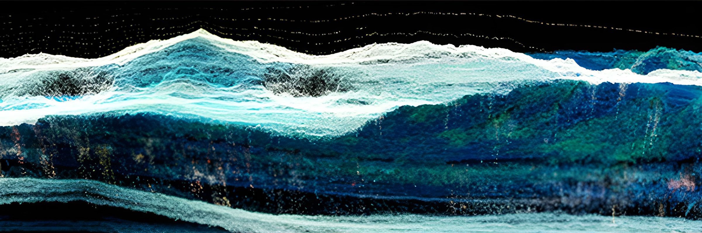
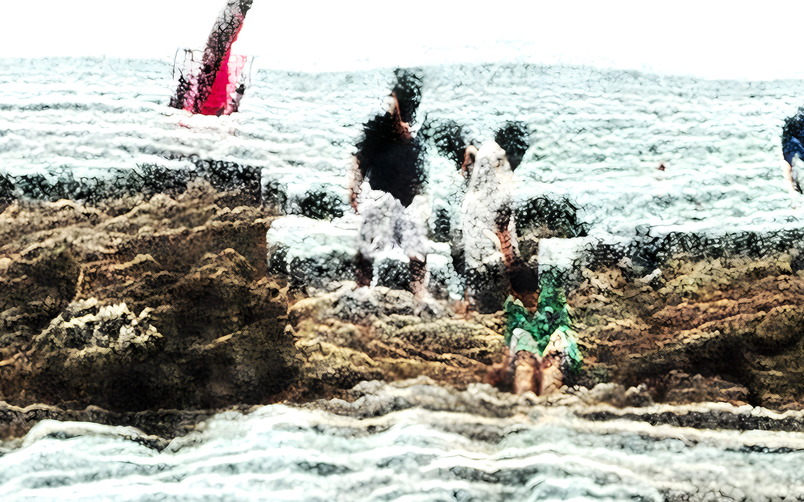

Jonghoon Ahn안종훈
Jonghoon Ahn is a filmmaker and media artist based between Seoul and Los Angeles. Working across film, XR, and digital performance, he uses motion capture, digital humans, real-time engines, and generative imaging technologies to create works in which audiences move beyond spectatorship and become part of the experience.
He has worked as a technical artist on a game project with Academy Award-nominated animator Erick Oh, and as technical director on digital-human projects by media artist Yaloo, whose work has been featured in Hyperallergic. His short film Non-done Record was selected as a finalist for the 2024 Sundance Ignite × Adobe Fellowship, while his feature screenplay was selected as a 2025 Academy Nicholl Fellowships Partner Entrant and shortlisted for the CJ & TIFF K-Story Fund. He received an MFA in Art and Technology from California Institute of the Arts and is currently pursuing a PhD in Media Arts and Technology at the University of California, Santa Barbara.
Algorithm of Flowers and Grammar of Waves

Particle landscapes formed from waves, reconstructed places, and fragments of memory.
Presented through the Art Korea Lab media-wall program, the series unfolds as shifting particle landscapes built from waves, reconstructed places, and fragments of memory.
View work →Works by medium
Film, interactive installation, media art, XR, and 3D works are organized here by medium.
Interactive Art
09 works
To Eternity
Archival photographs of the Gwangju Democratization Movement are recomposed over the viewer's live image.

AI Gang Se-hwang
An eighteenth-century painter is reconstructed as a digital human that converses with museum visitors.

Jemulpo Photo Studio
Visitors' portraits are transformed through the visual language of early modern Incheon magazines.

AI ZOO
Machine-learning processes are translated into a physical installation of transparent forms and balloons.

Directed By AI
Personal facial data is used to reconstruct family members as fictional digital figures.

Silhak Dance
A digital scholar follows the viewer's body movement in real time.

Track 6
Captured body movement is mapped into six distorted geometric environments.

Beads Wall
The viewer's movement dissolves into a field of bead-like points.

AI Choi Jung Hoon
Voice, appearance, and conversational behavior are integrated into a real-time AI avatar.
Film
06 works
Non-Done Record
A young filmmaker's fading consciousness returns as a film assembled from unfinished memories.

Where Is My Cloud
After eight years of digital memories disappear, a journey begins through landscapes and imagined recollection.

Urban Diary
A girl left alone in an apartment moves through the quiet rhythm of urban domestic life.

Like Mother
A surreal subway journey traces guilt, grief, and the return of a mother's image.

Mythomania
Three strangers drift on a raft as silence exposes the guilt each has carried.

Berdua Saja
A man enters a mysterious inn for people preparing to die and encounters an unexpected turn.
Media Art
08 works
Algorithm of Flowers and Grammar of Waves
Waves and reconstructed landscapes are broken into particles and reassembled as a moving-image series.

DADA Myeongdong
A day in Myeongdong is recomposed as a media-wall landscape of light, movement, and urban afterimages.

Dream of Salmon
Luminous forms drift through darkness in a meditation on memory, loss, and return.

Fall of Minds
Ambient sound changes the density and movement of a generative waterfall in real time.

The Nature of Manpasikjeok
The legend of Manpasikjeok is reinterpreted through wind, sound, and generative imagery.

Seon-a's Family
AI and digital-human media trace conflict, distance, and reconciliation within a family.

Nature Human
A virtual human speaks from an imagined ecological future in which human and nature are no longer separate.

Shininho · Digital Human
A real person is reconstructed as a digital human for exhibition and performance contexts.
XR / Game
05 works
Fineo, Translated Universe
The periodic table becomes a spatial system built from harmonograph-based forms.

Escape Metro
A surreal VR escape game unfolds through real-time conversations with AI characters.

NARCI
An elevator becomes a closed psychological space for encounters with narcissistic figures.

Be NARCI
The viewer takes the narcissist's position and experiences the work through role reversal.

Graffiti Freedom
A virtual subway becomes a temporary surface for graffiti and imagined public freedom.

Digital humans and neural graphics
Ongoing studies are listed separately from completed artworks.
Interaction-Ready 4D Humans
This research examines how deformation spreads across semantically meaningful regions in Gaussian human representations. Current experiments reconstruct the pretrained HUGS model and compare learned LBS behavior with SMPL-based controls. Counterfactual ablation is the next step before making a causal claim.
Neural Graphics & Video Algorithms
3D Gaussian Splatting and NeRF are studied through controlled benchmarks, training-efficiency experiments, compression tests, and graphics-system profiling.
Jonghoon Ahn / 안종훈
Jonghoon Ahn is a filmmaker and media artist based between Seoul and Los Angeles. Working across film, XR, and digital performance, he uses motion capture, digital humans, real-time engines, and generative imaging technologies to create works in which audiences move beyond spectatorship and become part of the experience. He has worked as a technical artist on a game project with Academy Award-nominated animator Erick Oh, and as technical director on digital-human projects by media artist Yaloo, whose work has been featured in Hyperallergic.
Alongside his technology-driven practice, Ahn has continued to develop his work in storytelling and directing. His short film Non-done Record was selected as a finalist for the 2024 Sundance Ignite × Adobe Fellowship, while his feature screenplay was selected as a 2025 Academy Nicholl Fellowships Partner Entrant and shortlisted for the CJ & TIFF K-Story Fund. He received an MFA in Art and Technology from California Institute of the Arts and is currently pursuing a PhD in Media Arts and Technology at the University of California, Santa Barbara. His current practice brings cinematic storytelling and real-time technologies together in new media work.